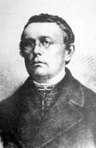

Держа́вний Гі́мн Украї́ни — один із головних державних символів України поряд із прапором і гербом. Державним гімном є пісня «Ще не вмерла України і Слава, і Воля»: слова Павла Чубинського, музика Михайла Вербицького. Офіційна музична редакція ухвалена Верховною Радою 15 січня 1992 року, текст гімну затверджено Законом України «Про Державний Гімн України» 6 березня 2003 року
Ще не вмерла України, ні слава, ні воля, Ще нам, браття українці, усміхнеться доля. Згинуть наші вороженьки, як роса на сонці, Запануєм і ми, браття, у своїй сторонці. Душу й тіло ми положим за нашу свободу, І покажем, що ми, браття, козацького роду. Станем, браття, в бій кривавий від Сяну до Дону, В ріднім краю панувати не дамо нікому; Чорне море ще всміхнеться, дід Дніпро зрадіє, Ще у нашій Україні доленька наспіє. Душу й тіло ми положим за нашу свободу, І покажем, що ми, браття, козацького роду. А завзяття, праця щира свого ще докаже, Ще ся волі в Україні піснь гучна розляже, За Карпати відоб'ється, згомонить степами, України слава стане поміж ворогами. Душу й тіло ми положим за нашу свободу, І покажем, що ми, браття, козацького роду.